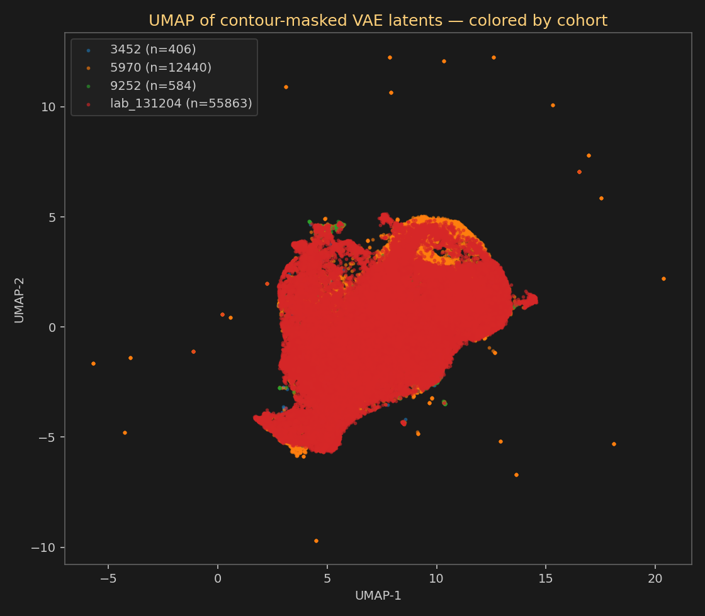

Pre-registered rule (refinement E):
|Cohen's d| > 1.5 AND
|Pearson r vs principal_freq_hz| > 0.4
No latent dimension crossed both thresholds. The cage signature did NOT survive the contour mask at the cross-cohort level.
| Cohort | N samples |
|---|---|
| 3452 | 406 |
| 5970 | 12440 |
| 9252 | 584 |
| lab_131204 | 55863 |

| Dim | max |d| | pair | r vs principal_freq | fires |
|---|---|---|---|---|
| z_20 | 0.769 | ('3452', 'lab_131204') | -0.170 | clean |
| z_31 | 0.727 | ('3452', 'lab_131204') | -0.235 | clean |
| z_24 | 0.648 | ('5970', '9252') | +0.356 | clean |
| z_30 | 0.592 | ('5970', 'lab_131204') | -0.081 | clean |
| z_27 | 0.540 | ('9252', 'lab_131204') | -0.215 | clean |
| z_26 | 0.539 | ('9252', 'lab_131204') | -0.041 | clean |
| z_2 | 0.536 | ('9252', 'lab_131204') | -0.123 | clean |
| z_18 | 0.464 | ('5970', 'lab_131204') | +0.154 | clean |
| z_15 | 0.409 | ('9252', 'lab_131204') | +0.042 | clean |
| z_0 | 0.404 | ('3452', 'lab_131204') | -0.112 | clean |
Generated by scripts/phase5_cross_cohort.py